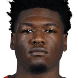

Played 1 season for 1 team; his teams went 9–2 in his games.
Jump to: Record by opponent · Season by season · Teammate help
Compare Marcus Derrickson with…
Final NBA finish, season by season
Title Finals Other playoffs Missed playoffs. #1 = champion; the dashed line is last place that season. Each point opens that season's final standings.
All 30 teams ranked in 2018-19, his best finish (#2)Teammate help
 Stephen Curry5.01 season
Stephen Curry5.01 season Kevin Durant4.51 season
Kevin Durant4.51 season Klay Thompson1.51 season
Klay Thompson1.51 season
Career
Career records (W–L, W − L, with and without) include 2026-27 games through Nov. 19, 2026; season counts and finishes are through 2025-26. Each card opens its board in the same scope. How we count.

Latest completed seasons
- 2018-19·
 Golden State·#2 of 3057–25 · Lost in the NBA Finals 2–4 to
Golden State·#2 of 3057–25 · Lost in the NBA Finals 2–4 to  Toronto
Toronto
Season by season
Newest first; every header sorts. Final NBA finish is the team's rank among all teams that season (#1 = champion) and opens that season's standings. "Without him" uses the team-season window; the span line counts only the games between his first and last game for the team.
| 2018-19 | #2 of 30 | 57–25 69.5% | Lost Finals 2–4 | 11 of 82 | 9–2 81.8% | 48–23 67.6%span: 38–21, gap +17.4 | +14.2 |
On/off, starts and close games
From the lineup data, 1996-97 on. On/off is net points per 100 possessions with him on the floor minus off, a different unit from the win-rate gaps. Started and off the bench are team records in those games; close games are those within 5 points in the last 5 minutes with him on the floor.
| 2018-19 | −29.8 | 9–2 81.8% |
Teammate help by season
Two separate numbers per season, each with every teammate that adds to it. Help this season = Teammates Score points for honors won that season by teammates who shared a game with him. Help coming in = the same teammates' honors from the season before. How help works.
- 2018-19Golden State
Stephen Curry All-NBA 1stAll-Star58 gKevin Durant All-NBA 2ndAll-StarAll-Star MVP4.510 gKlay Thompson All-StarAll-Def 2nd1.510 g
 Draymond Green All-Def 2nd0.55 g
Draymond Green All-Def 2nd0.55 g
Help this season: 11.5 = 5 Stephen Curry + 4.5 Kevin Durant + 1.5 Klay Thompson + 0.5 Draymond Green
More: help coming in and other teammates
Help coming in (teammates' honors the season before): 21.5 = 15 Kevin Durant + 3 Stephen Curry + 1.5 Draymond Green + 1 Klay Thompson + 1 DeMarcus Cousins
Other teammates (no honors that season): Jordan Bell 11 g, Quinn Cook 11 g, Kevon Looney 11 g, Andre Iguodala 10 g, Jonas Jerebko 10 g, Shaun Livingston 9 g, Alfonzo McKinnie 9 g, Damion Lee 6 g, Jacob Evans 5 g, DeMarcus Cousins 4 g, Damian Jones 2 g, Andrew Bogut 1 g
Record against each opponent
Regular season, through 2025-26 (2026-27 games not included): 11 games, 9–2, against 11 franchises.
Grouped by franchise (named as today); game lists keep each team's name that season. Filters and the tab are kept in the URL, so a filtered view can be shared.
| Games list | |||||||
|---|---|---|---|---|---|---|---|
| 1 | 1–0 | 100.0% | +1 | N/A | 2018-19 | ||
| 1 | 1–0 | 100.0% | +1 | N/A | 2018-19 | ||
| 1 | 1–0 | 100.0% | +1 | N/A | 2018-19 | ||
| 1 | 1–0 | 100.0% | +1 | N/A | 2018-19 | ||
| 1 | 0–1 | 0.0% | −1 | N/A | 2018-19 | ||
| 1 | 1–0 | 100.0% | +1 | N/A | 2018-19 | ||
| 1 | 1–0 | 100.0% | +1 | N/A | 2018-19 | ||
| 1 | 0–1 | 0.0% | −1 | N/A | 2018-19 | ||
| 1 | 1–0 | 100.0% | +1 | N/A | 2018-19 | ||
| 1 | 1–0 | 100.0% | +1 | N/A | 2018-19 | ||
| 1 | 1–0 | 100.0% | +1 | N/A | 2018-19 |
Rows add up to his career record in his games. A playoff series counts when he played in it; early round-robin games show as games only. How we count.
Arrival and departure
Team wins per 82 games the season before he arrived vs his first season there, and his last season vs the season after he left. He leaves a team only when his next season with games is for another team (or he never plays again); whole seasons he missed and came back from are one "Missed" row with the team's record without him. Per 82 so short seasons compare fairly. These are team records, not a measure of what he did.
| Left | after 2018-19 | 2018-19: 57–25 57.0 per 82 | 2019-20: 15–50 18.9 per 82 without him | −38.1 wins | |
| Debut | 2018-19 | 2017-18: 58–24 58.0 per 82 | 2018-19: 57–25 57.0 per 82 | −1.0 wins |